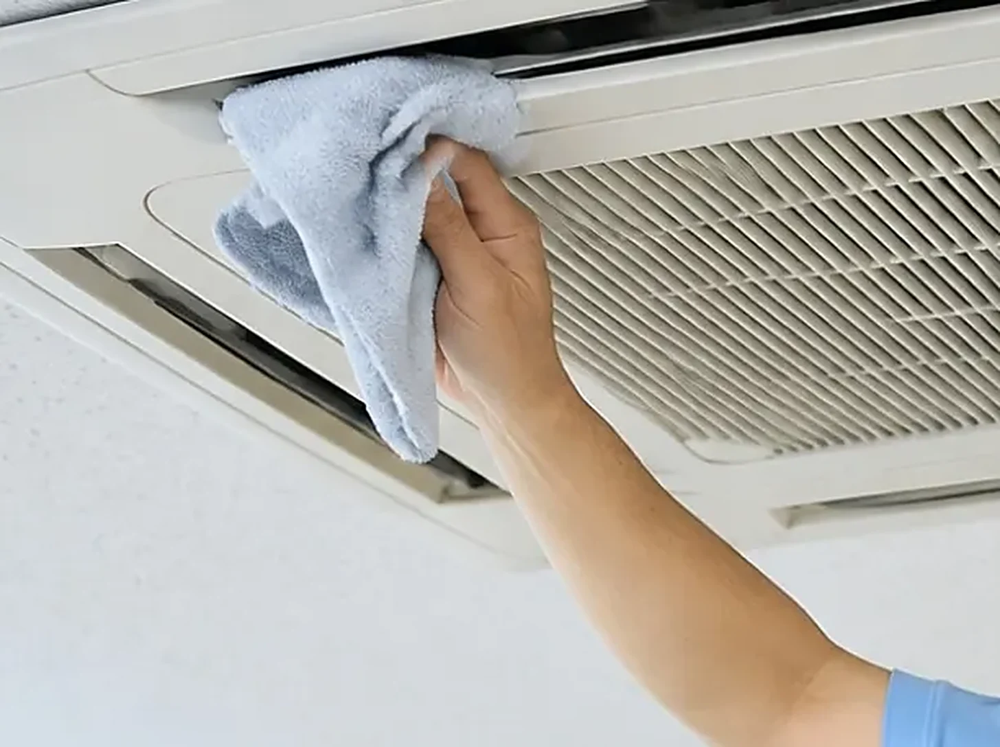
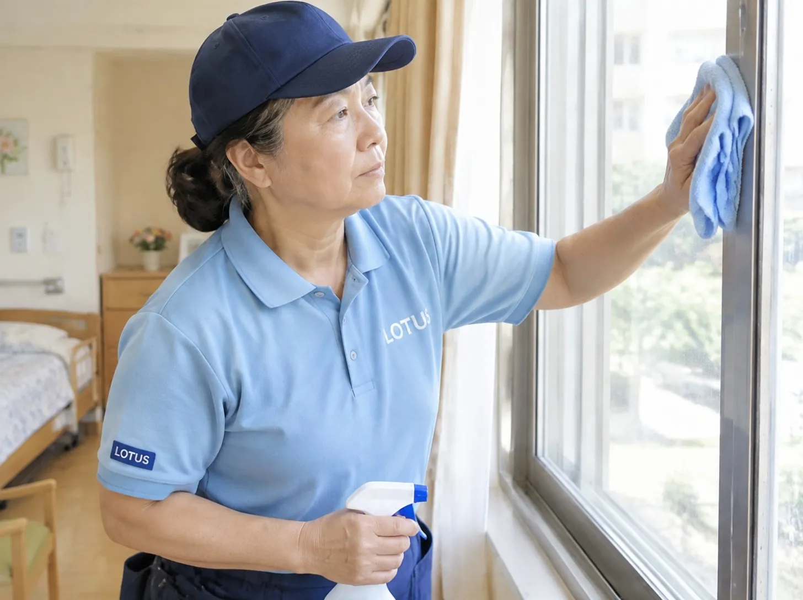
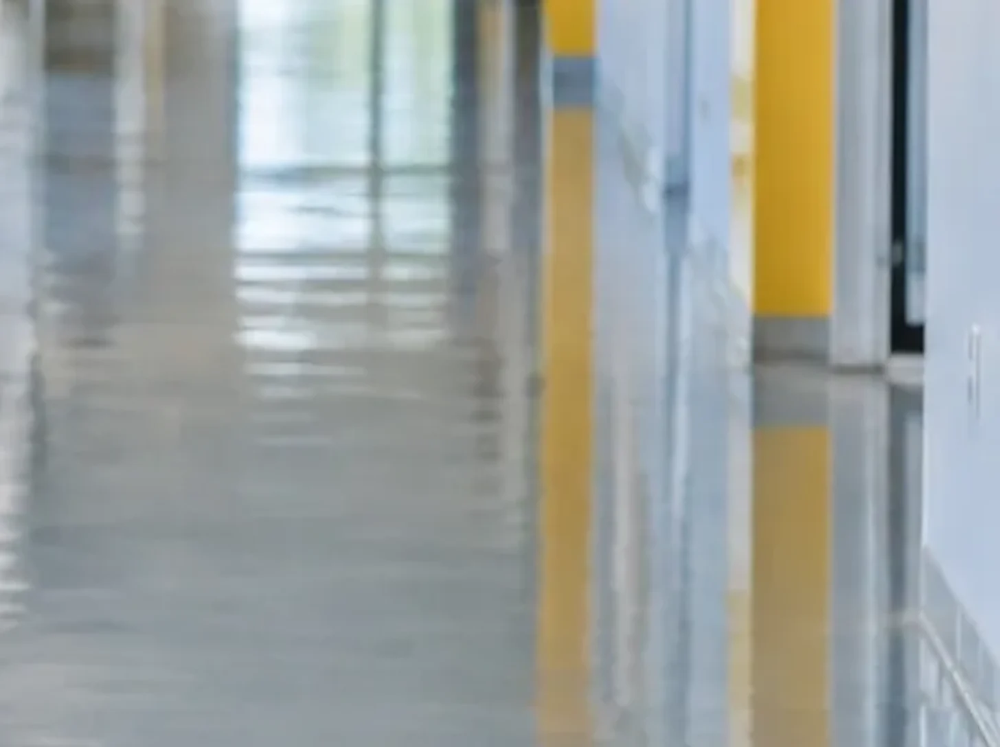

東京都・神奈川県の清掃サービス
1 か所から、頼める清掃。
エアコン 1 台、居室 1 部屋から。
オフィス・店舗・クリニック・介護施設・賃貸の空室。清掃のプロとして 15 年以上(うち大手で約 10 年)の代表が基準を決め、イベントの会社の段取りで、作業時間と順番を事前に施設・お店と相談して進めます。初回は 1 か所だけで構いません。仕上がりを見てから、定期をご検討ください。
- 1 か所から相談できる
- 時間厳守進行表の会社です
- 写真で報告作業前後を残す
- 東京・神奈川対応地域

料金のめやす
料金の目安。
表示価格はすべて税別。正式な金額は、下見または写真でお見積りします。ここに無いメニューも、同じ流れでお見積りします。
- 業務用エアコン35,000円 / 1 台
天井カセット・天吊り。内部洗浄と試運転まで。複数台はまとめてご相談ください。
1 台から相談 ↗ 
介護施設の居室(20㎡以下)20,000円 / 1 室介護施設の居室。床・水まわり・建具。浴室・トイレ付きは別途お見積り。
1 部屋から相談 ↗ 介護施設の居室(21㎡以上)30,000〜40,000 円 / 1 室
介護施設の居室(21㎡以上)30,000〜40,000 円 / 1 室状態で前後します。賃貸の空室・退去後の清掃は、間取りを見てお見積りします。
写真で見積 ↗
床・カーペット・布もの・定期お見積り床洗浄とワックス、カーペット、ソファ・椅子、週次・月次の定期。広さと頻度で決まるため、個別にお出しします。
内容を相談 ↗
実績件数や顧客名は載せていません。相談のときに直接お伝えします。
まとめてお得
まとめると、お得に。
同じ日に、同じ建物で複数の作業をまとめると、移動と段取りの分だけ安くできます。割引の額は内容で変わるため、お見積りに明記します。
- エアコン まとめ割同じ施設で 2 台以上。台数が増えるほど 1 台あたりは下がります。
- 居室 + エアコン退去後の居室清掃と、その部屋のエアコンを同日に。
- 床 + カーペット + 布もの共用部をまとめて。営業時間外の 1 回で終えます。
- 複数居室 まとめ割同じ施設の空室を同日に。1 室ごとより下がります。
- 定期 + 年数回の重点洗浄日常の定期に、床やエアコンの重点洗浄を年数回組み込みます。
選ばれる理由
なぜ、イベントの会社が清掃を。
答えは順番が逆で、代表はもともと清掃の人間です。
- 01清掃のプロとして、15 年以上。代表は清掃業界大手で社員として現場に立ち、その後は外部顧問として仕組みの側から現場を見てきました。作業の基準と道具の選び方は、その経験が決めています。
- 02分単位で動く会社の、段取り。本業はイベントの映像・技術。進行表どおりに終える仕事を毎日しています。「12 時の食事までに終える」を、約束として扱えます。
- 03機械に強い。業務用エアコンや電気設備を日常的に扱う会社です。配線・ブレーカー・機器の扱いで、職員の手を止めません。
- 04手順書と記録の文化。機材 130 件超の手順書を書いている会社なので、清掃も「手順・止める条件・完了の目安」で見せ、作業前後の写真で報告します。
- 05早朝・夜間・休日に慣れている。イベント業の勤務形態そのまま。施設の一日に、こちらが合わせます。
こんな場所に
どんな場所に。
ご依頼の流れ
相談から作業まで。
- 01相談場所・広さ・希望の時間帯
- 02下見 or 写真現地か、写真でのお見積り
- 03見積作業内容と金額を書面で(税別)
- 04日程その場所の一日に合わせて
- 05作業動線と音の出る作業を調整
- 06報告作業前後の写真と、次回の提案
対応エリア
対応地域。
地域外や離島は、移動の条件を含めてご相談ください。
よくある質問
よくある質問。
見積りだけでも頼めますか。
はい。写真でのお見積りは無料です。下見が必要な場合も、事前にお伝えします。
当日の追加料金はありますか。
見積りに無い作業が必要になった場合は、作業前にご説明し、了承をいただいてから進めます。黙って追加することはありません。
立ち会いは必要ですか。
最初と最後の確認にいていただけると助かりますが、鍵の受け渡しと連絡先があれば、不在でも対応できます。
営業時間外・早朝・休日もできますか。
できます。イベント業の勤務形態そのままなので、その場所の一日に合わせます。
キャンセルはいつまでできますか。
日程を決めるときに、キャンセルの条件を書面でお伝えします。先に条件を出さずに請求することはありません。
落とせない汚れはありますか。
あります。下見や写真の段階で「落ちる・薄くなる・落ちない」を先にお伝えします。
賃貸管理・不動産
賃貸管理と、不動産のこと。
清掃・原状回復・入退去の段取りと一体で、賃貸物件の管理のご相談を受けます。管理だけ、清掃だけ、どちらからでも。
売買・賃貸の仲介は、宅地建物取引業者である協力会社の 株式会社オーシャンクルー(吉祥寺)と連携して対応します。窓口は LOTUS のままで構いません。
株式会社オーシャンクルー 宅地建物取引業免許：東京都知事(2)第101112号(出典：オーシャンクルー 会社概要)。LOTUS 自身は宅建業の免許を持っていません。
清掃の読みもの
読みもの。介護・福祉施設の清掃。
作業の順番と理由を、短い読みものにしています。1 本 5〜6 分。
ご相談
まず 1 か所から。
仕上がりと段取りを見ていただいてから、定期のご相談へ。最初の相談に資料はいりません。